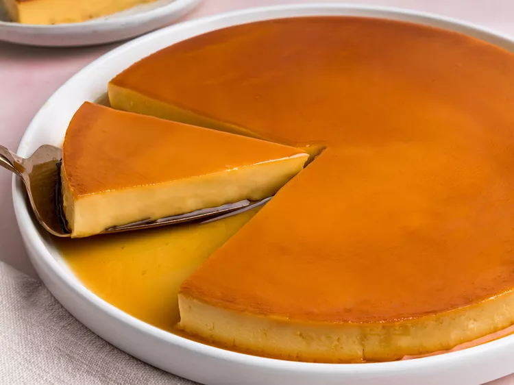

Leche Flan

Description
Leche Flan is a dessert made-up of eggs and milk with a soft caramel on top. It resembles crème caramel and caramel custard.
It has been a regular item in the menu of most restaurants because of its taste, ease in preparation and long shelf life.
It can also be added as a component to build other great tasting dessert creations.
Ingredients
Caramel:
- 1 cup sugar
- ¾ cup water
Custard:
- 1 (14 ounce) can sweetened condensed milk
- 1 (12 ounce) can evaporated milk1 (12 ounce) can evaporated milk
- 12 egg yolks
- 1 tablespoon vanilla extract
Steps
- Gather all ingredients. Preheat the oven to 375 degrees F (190 degrees C).
- Combine sugar and water in a medium saucepan over medium-high heat.
Bring to a boil without stirring to avoid the mixture crystallizing.
Continue to boil, swirling the pan occasionally, until sugar syrup begins to brown, 7 to 10 minutes.
Reduce the heat to medium low and watch the color.
- Once the caramel is a deep brown, 2 to 3 minutes, immediately pour it into a 10-inch flan mold.
Carefully tilt the mold to make sure the whole bottom surface is covered.
- Combine evaporated milk, condensed milk, egg yolks, and vanilla extract in a large bowl.
Stir lightly to prevent bubbles or foam from forming; strain batter.
- Place a roasting pan large enough to hold the flan mold on the oven rack.
Fold two 32-inch long sheets of foil lengthwise in quarters to make strips.
Cross the strips and place the flan mold in the roasting pan, with the ends of the strips extending over the edges of the roasting pan.
Crimp ends slightly to keep them in place.
- Slowly pour the custard mixture into the caramel-lined flan mold.
- Add enough hot water to the roasting pan to come halfway up the side of the mold. Cover the roasting pan with aluminum foil.
- Bake in the preheated oven until firm and a knife inserted near the center comes out clean, about 1 hour.
Carefully remove the roasting pan from the oven. Carefully remove the flan mold from the roasting pan using the foil strips.
Let cool on a wire rack, about 1 hour. Cover and chill in the refrigerator until completely cool, at least 4 hours or overnight.
- Run a paring knife around the edges of the flan.
Cover the mold with a rimmed platter and carefully flip it over to release the flan from the mold for serving.
Scrape any excess caramel from the mold over the flan.
Home